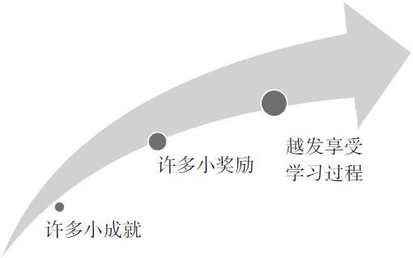
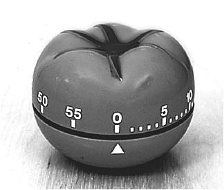

第6章 小恶魔无处不在
深入理解拖延的习惯
有本见解深刻的书叫《习惯的力量》（The Power of Habit），作者查尔斯·都希格（Charles Duhigg）在书中描述了一个迷失自我的人——丽莎·艾伦。这位中年女性从没停止和体重做斗争，16岁的她就开始抽烟、喝酒，丈夫也另寻新欢。她没有一份工作做到过一年以上，而且还深深地陷入债务。
但4年之后，丽莎就来了个华丽的转身。减了60磅[1]的体重的她，正努力攻读硕士学位，戒了烟酒，身体非常健康，都能跑马拉松了。
想了解丽莎的今非昔比，我们首先要来认识习惯。
习惯有好有坏。说到底，习惯就是大脑进入了预设好的“小恶魔”状态（即出窍状态）。你也许不足为奇，神经模型从频繁的练习中产生，它们自动联结形成组块，而组块和习惯有着密切的联系。[2]习惯可以帮我们节省力气，它能为我们的大脑腾出空间进行别的活动。就以倒车为例，第一次把车倒回自家车道的时候，你肯定是高度警惕。迎面而来的信息应接不暇，让你觉得倒车难如登天。但很快你就学会了对这些信息进行组块，因此你还没意识到组块的形成，但只要脑中一出现“出发”的念头，你就已经在倒车了。这时你的大脑就进入了一种出窍状态，在这种模式下，大脑无法清醒意识到它正在做的每件事。
你可能想不到，自己受控于习惯性出窍状态的情况有多么频繁。这就是习惯的关键所在：在你执行习惯性动作的时候，不用集中注意力思考。这就节省了力气。
习惯性动作的时间有长有短。短暂的习惯性动作可以是对路人无心的一笑，或者是瞄一眼指甲干不干净。持续时间较长的习惯性动作，可以是下班回家后跑跑步，或是看几个小时电视。
习惯分为四个部分。
1.信号。这就是使你进入“出窍状态”的触发点。信号可以很简单，比如仅仅看到计划清单上面的第一个任务（提醒你“要开始做下周的作业啦”），或者是看到朋友发来的一条短信（提醒你“又可以偷懒了”）。信号本身没有好坏之分。你对信号的反应，也就是你的反应程序才是重点。
2.反应程序。这就是你的出窍状态——你的大脑在接到信号暗示时做出的常规性、习惯性的反应。小恶魔的反应可以是无害的或有益的，但在最坏的情况下，它可能会有很强的破坏性，它们会违抗常识。
3.奖励机制。习惯之所以得以发展和继续，是因为它能激励我们，让我们感到愉悦。拖延是一种很容易养成的习惯，因为它会如此迅速地奖励你，把你的注意力转移到更愉快的事情上去。但是好习惯也可以得到奖励。逃开拖延的魔爪，找到各种方式奖励自己学习数学和科学的好习惯会至关重要。
4.信念。习惯的强大效果，来自你对它的信念。比如你可能会觉得，自己不可能改掉把学习拖到最后一刻才做的习惯。想要改变习惯，你需要做的是改变自己内心深处的信念。
我经常发现，当我觉得很难开始去做一件事时，我就先去跑跑步或者做点别的运动，等我回来了，我就会发现它容易得多了。
——凯瑟琳·福克（Katherine Folk）
工业与系统工程学专业大一学生
驾驭习惯（“小恶魔”），为你所用
在这一部分，我们要详细说说如何利用小恶魔习惯的力量来帮自己避免拖延，同时尽量少用意志力。你肯定不肯彻头彻尾地改变旧习惯，你想做的只是改变一部分旧习惯，并养成一些新习惯。改变旧习惯的窍门是寻找压力点——你对信号的反应。改变你对信号的反应，是唯一需要动用意志力的环节。
要理解这一点，我们可以重新回顾一下习惯的四个部分，并从拖延的角度去重新分析它们。
1.信号。识别出让你进入出窍和拖延状态的导火索。信号一般有这么几种：地点、时间、感受、对他人的反应和刚刚发生的事件。[3]你是不是经常上网查资料的时候，不一会儿就发现自己跑去看其他网页了？你是不是经常很想专心思考，但一旦被一条短信打断流畅的思路，之后就要花上10分钟才能重新回到专注状态中？拖延问题就出在它是一种不假思索的习惯，你往往在无意识间就开始了拖延。
学生常常发现，养成新信号对他们帮助很大，比如一放学回家就开始写作业，或者在课后休息一下之后马上写作业，效果都非常好。《拖延心理学》（The Procrastination Equation）的作者，拖延症研究专家皮尔斯·斯蒂尔（Piers Steel）说：“如果你保护自己的反应程序，它最终也会反过来保护你。”[4]
在25分钟学习时段内努力写作业的你，要是想避免受到破坏力最大的信号的干扰，你可以在一段时间内关掉手机或远离网络。精算学大一学生耶斯拉·哈桑喜欢把手机和笔记本拿给姐姐保管，这是一种非常聪明的做法，因为移除诱惑的非常举动就是对学习的公开承诺。如果你向亲友求助，他们会帮得上忙。

2.反应程序。这么说吧，你经常会把注意力从学习转移到不太痛苦的事情上。每次得到信号，你的大脑都想自动进入这个反应程序，所以当这个压力点出现的时候，你就必须主动注意去改变旧习惯了。改变的关键在于制订计划。培养新习惯可能会很有用。有些学生养成了一种习惯，比如上课前把智能手机放在车上，这样就消除了一个强大干扰。许多学生则发现，安坐在图书馆或离家近些的安静环境中总是有好处的，坐在自己最喜欢的椅子上，又正好把一切网络设备都关掉的时候，高效率就来了。你的计划一开始可能不会顺风顺水，但一定要坚持。必要的时候可以调整计划，要是计划有效果再去享受成功的喜悦。别想一口吃个胖子。番茄工作法——25分钟计时法，在改变你对信号的反应上尤其有效。
另外，在开始高难度任务前填饱肚子也挺有用。这样就可以确保你在开始工作那一瞬间就拥有足够的意志力，[5]还能避免出现“我要去找点吃的……”这种可能干扰。
3.奖励机制。有时这需要一番调查研究。你为什么要拖延？拖延能不能用情感上的补偿来替代？能不能以那种小有成绩，哪怕是微不足道的自豪感来替代？或用一种满足感来替代？你能否在内心打个小赌或是跟自己比个赛，然后争取胜利？能否让自己享用一杯拿铁，或去浏览自己最爱的网站？能否奖励自己毫无愧疚地看一晚上电视或上一晚上网？能不能在有更大收获时给自己更大的奖励，比如电影票、毛衣或是买点浮夸的小礼物？
我和我的男朋友都喜欢看电影，所以在某些天完成特定任务后，作为奖励，他会带我去看电影。这不仅是为我的学习或做作业增添动力，也是通过强化“信号—反应—奖励”系统来助我养成新习惯。
——查伦·布里森（Charlene Brisson）
心理学专业学生，第二专业护理学快捷课程项目参加者
记住，习惯的强大之处在于它能造成神经层面的欲望。要想克服之前的欲望，就再来一个新奖励。只有当你的大脑开始期待这个新奖励，关键的转变才会发生，你才能养成新习惯。
认识到这点特别重要：一个小小的自我称赞，比如“好棒，好厉害”，就能启动你大脑的重塑过程。这种重塑有时候被称为“习得性勤奋”（learned industriousness），它能让你曾觉得乏味的工作陡然生色。[6]你也会发现，仅是沉浸到工作状态中就是一种奖励，它让你感受到高效的产出，而刚坐下开始工作的你根本想象不到自己会如此高效。还有很多人发现，每到一个特定时间给自己设一个奖励也很有效，比如说午饭休息时段，跟朋友去熟食店吃上一顿，又或者下午五点准时停下工作，这样定个小小的截止时间也会推动工作进度。
如果你发现自己一开始很难进入思维“流畅”的状态，别气馁。我发现，有时要把枯燥乏味的事做上好几天，经历几个番茄周期后才能表现得思路流畅，才会发现自己开始喜欢在全新领域中做事情。还要记得，你越是对某件事得心应手，就越会乐在其中。
4.信念。改变拖延的习惯，最重要的是要有“自己一定能行”的信念。你可能会发现，在工作进展中一旦遭遇压力，你就会很渴望退回到原先令你更舒适的习惯里去。但你对新系统效果的坚信不疑，能够助你渡过难关。巩固信念的方式之一就是发展一个新的朋友圈。要想培养“我能行”的信念，就要多和抱有这种信念的同学相处。与志同道合的朋友一起，共同建立一种鼓舞人心的氛围，这样就算你在一时的软弱中忘记了想要坚守的价值，朋友间上进的氛围也能够帮你不忘初心。
“心理对照”（mental contrasting）[7]也是一种有效的办法。此法是将你现在的状态和你期望达到的状态做对比。比如，假如你想考医学院，就想象自己是一个医生，哪怕已经在筹备一场精彩的度假，而且经济上你也能承担，可在这节骨眼你也不忘救死扶伤。一旦你脑子里有了这样激动人心的景象，你就可以拿它与现在的生活做对比。想想自己那辆年久失修的小破车，想想晚餐吃的奶酪通心粉，还有堆积如山的助学贷款。然而希望在前方！
心理对照能产生巨大效果的原因，就在于你在拿想要的未来与当下的状态或曾经的状态做对比。在工作和生活空间中摆放一些能让你联想到理想未来的图片，它可以为你的发散模式增加动力。只要记着把那些美好的图景和现实中置身平庸生活的自己做对比，或是自己的出身做对比。你能够改变现实。
好日子在后面
心理对照法真是太棒了！当我还是个小毛孩的时候就开始用这个方法了，人们可以将这方法运用到各种境况中去。
曾经盛夏时节，我在马里兰州一个鸡肉供应厂工作了好几个月。就在那时我下决心要去上学，要拿到学位。这就是我用来做心理对照的经历。我相信，有时仅仅一天的艰辛就能激发出重要的觉悟。之后，专心找办法去突破现状就容易多了。
——麦克·奥雷伊（Mike Orrell）
电气工程专业大一学生
该你试试了！
练习与小恶魔较劲
你是不是喜欢早上一起床先查查电子邮件，逛逛Face-book？你可以改变一下，先定时工作10分钟，然后奖励自己上会儿网。让你惊讶的是，这个自我控制的小练习将让你的一整天都充满对抗小恶魔的力量。
提醒：第一次坐下来尝试本方法，一些小恶魔会大肆尖叫抗议，好像要吃掉你的脑子。别理它！这个训练的重点之一就是学着对小恶魔滑稽的做派一笑了之，因为小恶魔会故技重施，预言一般地诱惑你“瞄一眼Facebook没关系的，就这一次”。
通过关注过程而非结果进入思绪
如果发现自己选择逃避是因为某些任务让你难受，有个好办法可以改变这种情况：学会关注过程而非结果。
过程指的是时间进程以及与时间进程相关的习惯和举动，比如“我要工作20分钟”。结果是一种产出，比如你要完成的一份家庭作业。
想要避免拖延，就不要专注于结果。相反，你应该把关注点放在一些过程的形成上——也就是培养一些习惯，这些习惯能让你动手做一些痛苦而又不得不完成的工作。
比如说，你不喜欢做数学作业，你就一直推迟。你会想，不就5道题嘛，能有多难？
而你心里明白，这5道题可能会是艰巨的任务。你幻想自己能在最后一秒搞定这5道题（或者20页的报告之类），而活在这样的幻想里会比较轻松。
你的挑战就是要避免把注意力放在结果上——那些已解决的作业题。这会引发痛苦感，导致你的拖延。相反，你应该关注于过程，关注用在做作业或备考那几天或几周里的一小段时间。不要在意你是否在某一段时间内完成了作业，或掌握了关键概念。相反，这一切的重点应是你在短暂的期间内尽全力去行动——这就是所谓过程。
这里的基本理念就是，你脑中的习惯性部分（小恶魔）是喜欢过程的，因为它可以不动脑子跟着走。在过程上诉诸友善的小恶魔，比请它们帮你达成结果要简单得多。
用X标出位置
用书签或者便利贴标出每天的阅读目标会是个好主意。它是进度的直接反馈——如果终点触目可及，你会更有动力。
——弗里斯特·纽曼（Forrest Newman）
萨克拉门托城市学院天文学与物理学教授
分解工作量才能细嚼慢咽：专注而简短地工作

“番茄工作法”是一种帮你在短时间内集中注意力的方法。“poromodo”是意大利语中的番茄——因为这个时间管理系统的创始人弗朗西斯科·齐里洛（Francesco Cirillo）在20世纪80年代发明了一个番茄形状的计时器，它因此而得名。番茄工作法中，你需要在计时器上定25分钟。（之前在第2章的“该你试试了！”部分，我们介绍过这个概念。）计时器的嘀嗒声一响，你的倒计时就开始了。不许偷偷上网，不许手机聊天，不许给朋友回信息。使用番茄工作法的好处是，如果工作时身边有家人和朋友，你可以告诉他们你正在用这个方法。那么，如果他们中途打扰到你，就只需要提醒他们，你正在“番茄时间”或是“倒计时”中，这样就可以友善地提醒他们让你独处。
你也许会提出反对，认为在倒计时状态下工作压力很大。但研究者发现了一些引人着迷而又反直觉的现象。如果你能在轻微压力下学习，你将能更轻松地应对更大的压力。比如，就如学者沙恩·贝洛克（Sian Beilock）在她的著作《窒息》（Choke）中所说，平时在他人面前练球的高尔夫球手，日后参加观众众多的赛事就不会乱了阵脚。同样，如果你习惯在轻微的时间压力下解决问题，到了考试的高压情境中，你就没那么容易“发懵”了。[8]从外科手术到电脑编程，各个领域最顶尖的高手，每次都会有意寻找一些会给他们施压、提高他们表现的教练。[9]
关注过程而非结果对避免拖延十分重要。每天不断地在学习过程上花时间才是重中之重。要关注“番茄时间”，即时长25分钟的工作时段，而不要专注于完成任务。可以注意到，本图中，物理学家兼冲浪者加勒特·利西（Garret Lisi）也是如此，他只关注当下，而不是专注于完成这个冲浪动作。
要是你第一次尝试番茄工作法，很可能会惊讶于自己经常会有开小差的冲动。同时让你欣慰的是，你发现重新把注意力转回到工作上是有多么容易。25分钟很短，在这种短时间内保持注意力几乎是所有成年人和准成年人都能做到的。完成一小段工作之后，你可以舒服地往椅背一仰，享受这种成就感。
行动
分享一个很有用的小建议：即刻开始行动。这个建议听起来相当简单，但良好的开端是成功的一半。我喜欢去图书馆的安静楼层，因为在那儿常可以看到与我状态相同的人。学习的时候，最适合我的方法是让自己亲眼看到学习场景。如果我看到别人在努力做作业，那么我也会更想去做作业。
——约瑟夫·科因（Joseph Coyne）
历史专业大三学生
关键是，干扰也是不可避免的，在它出现的时候你要训练自己无视它。关于克服拖延，我能给你的唯一一个最重要建议就是无视干扰！当然，让自己置身于干扰最少的环境也是一个好办法。很多学生发现，在他们真正想要集中注意力的时候，要么是宁静的空间，要么戴一副隔声耳机，或者两者兼备，对他们都是极为可贵的。
隔绝干扰
我生下来就没有耳道，所以听不见（我患的是特柯二氏综合征的变异病）。在学习的时候，摘下助听器，我反而能真正集中注意力！我爱这先天不足！我一年级的时候，测过一次IQ。我的IQ是90，远远低于平均水平。我妈妈非常沮丧。我倒是兴高采烈的，因为我还以为自己达到了优等水平。我不清楚自己现在的IQ高低。既然我现在听得见声音了，IQ估计又低了不少吧。感谢老天赐于我声音开关。
——比尔·赛特勒（Bill Zettler）
生物学教授，若干新病毒的共同发现者，佛罗里达大学年度最佳教师荣誉获得者
完成一轮番茄时间的任务之后，要隔多久再开始下一轮工作呢？这取决于你所做的事情。如果你想去做的事离截止日期还有好几周，那你可以奖励自己毫无愧疚地上半个小时网。如果你的压力很大而且有好多工作就要到截止期限了，那么休息2~5分钟就差不多了。如果你想，你也可以用无计时的工作时段取代番茄计时器。要是发现自己进度又开始落后，工作时也没法集中注意力了，你就可以重新启用计时器。
在番茄工作法的计时系统中，只需运用专注力的过程占据首要地位。专注过程的你不会在某一项任务上举步不前，而是进入了一种自动状态，并不在乎是否必须完成任务。[10]这种自动状态能让你更自如地使用发散模式的能力。将注意力放在过程而非结果上，可以让你避免对自己做出评价，（我快完成任务了吗？）并让你更放松地沉浸到工作进程中。这样不仅可以帮你克服学习数学和科学时的拖延，对你的写作也会有帮助，而写作对于大学里各门课程来说都如此重要。
一心多用就像不断地揠苗助长。不断地转移注意力，也就意味着你脑中的新观点、新概念没有机会生根发芽。做功课的时候一心多用会让你迅速疲劳。每一次微不足道的注意力转移都会消耗能量。虽然每次转移看起来并不碍事，但是次次累积的结果就让你事倍功半。你也别忘了，这样你会更容易出错，而且学以致用到其他情形的能力也更弱了。一心多用的一个典型反例就是，一般来看，我们发现在学习和听课期间一心多用的学生总会不断考出差成绩。[11]
拖延行为还常常包括因一些鸡毛蒜皮的小事分神，比如削铅笔。分神的部分原因还是在于你对完成任务还存在紧张感。这是大脑在戏弄你，这也是记实验笔记会如此重要的原因，我们接下来很快就会谈到。
该你试试了！
无视是一种恩赐
下次当你感到有要去看短信的冲动，停下来认真审视这种感觉，承认它的存在，然后无视它。
练习无视干扰。无视干扰比一开始就用意志力抵抗干扰要有效得多。
本章小结
·在让你感觉痛苦的事情上多努力一点，最终你得到的好处会很多。
·如同拖延，习惯有四个组成部分：
·信号；
·反应程序；
·奖励机制；
·信念。
·要改变习惯，可以改变对信号的反应，或者干脆回避信号。奖励和信念有助于促成习惯上的长久转变。
·关注过程（如花费时间的方式），而不是结果（想要达成的目标）。
·用25分钟的番茄时间在短时段内保持高效率。每次成功地专注工作了一段时间，就给自己一个奖励。
·确保规划一些自由时间，滋养你的发散模式。
·“心理对照”是一种强大的自我激励法——想想最糟糕的现状或者不堪回首的过去，然后将它们和乐观的未来做对比。
·你会因为一心多用，让思维无法形成充分、丰富的联结，因为大脑中促成联结的部分还没来得及巩固联结，就被拉去做别的事情了。
驻足与回顾
当你试着移开视线去回想一个要点，或是一遍遍地重读一些段落的时候，如果感到无精打采或头脑空空，可以先去做几组仰卧起坐、俯卧撑或者开合跳。一点体育锻炼会对你的理解力和记忆力产生意外的好效果。在开始回顾本章观点前，试着去活动一下吧。
学习提升
1.你认为大脑中小恶魔般的习惯区域为什么会更喜欢过程而非结果呢？在你读完这本书之后的漫长时光里，比方说两年后，你会怎样保持这种以过程为主导的工作习惯呢？
2.对于你现在的习惯，你能做出哪些小改变来避免拖延？
3.你能养成哪些简单轻松的新习惯来帮助你避免拖延？
4.最困扰你且让你无法跳出拖延反应的信号是什么？要对信号做出与之前不同的反应，或完全回避这个信号，你能做些什么？
数学教授奥拉多·巴迪·绍赛多谈失败是成功之母
奥拉多·巴迪·绍赛多（Oraldo“Buddy”Saucedo）是评师网上一位人气很高的数学教授，他是得克萨斯州达拉斯郡社区大学的一名全职数学老师。他的教育信条是“我创造成功的机遇”。在这里，他讲述了自己从失败中激发出成功的故事。
总有学生问我，你是不是一直都这么聪明？对这个提问我总是忍俊不禁。接着我会告诉他们，我在得州农工大学学习时的最初绩点。
在黑板上写下一个“4.0”后，我说当时我第一学期的绩点就跟这个差不多。“听起来还不错，是吧？”正问着，我停下观察他们的反应。然后我拿起白板擦，把小数点移到了左边。最后看起来是这样的：“0.4”。
没错，真的是这样。我挂科挂得一塌糊涂，然后被学校开除了。让你们吃惊吧？但我最终还是回到了这所学校，并拿到了学士学位和硕士学位。
世上这种从失败到成功的故事比比皆是。如果你曾经失败，你可能还没意识到这个失败对推动你成功会有多么重要。
跟你们分享一点我在成功之路上学到的经验。
·你的分数不能说明你的一切，你能做到的远比这个分数好得多。分数反映的是时间管理和成功的概率。
·分数难看不代表你是个糟糕的人。
·拖延才是扼杀成功的毒药。
·关键要专注于让自己走出能够把握的每一小步，并进行时间管理。
·成功只留给有准备的人。
·人人都有失败的可能。你会失败，所以要控制你的失败。这就是家庭作业的用意——在这儿就让你把失败全部经历一遍。
·有史以来最大的谎言就是“熟能生巧”（practice makes perfect）。这是个假命题，因为熟练只能让你更好（practice makes you better），完美谁也做不到。
·练习就是让我们去经历失败。
·在家里，在课堂上，在任何时间任何地点练习，就是别等到考试的时候。
·靠恶补通过考试与成功不是一回事。
·考前恶补不过是临时对策罢了。它不会带给你太多满足感，得到的结果也是暂时的。
·学习才是长久之计，它会带来人生中最大的奖励。
·我们应该活到老学到老。全面学习。
·拥抱失败。为每一次失败庆祝。
·托马斯·爱迪生给他的失败重新命名，“1000种造不出电灯的方法”。也给你的失败换个名字吧。
·就算小恶魔兴风作浪我也要再争取一下！
人们都说经验是最好的老师。其实，失败才是最好的老师。我发现，学得最好的人都是最懂得对付失败的人，而且他们能让失败为其所用。
[1] 1磅≈0.4536千克。
[2] McClain 2011；Wan et al.2011.
[3] Duhigg 2012，p.274.
[4] Steel 2010，p.190，引用Oaten and Cheng 2006 and Oaten and Cheng 2007.
[5] Baumeister and Tierney 2011，pp.43-51.
[6] Steel 2010，引用了Robert Eisenberger，1992和他人的原作。
[7] Ibid.，p.128-130，其依次提到Gabriele Oettingen的论著。
[8] Beilock 2010，pp.34-35.
[9] Ericsson et al.2007.
[10] Boice 1996，pp.18-22.
[11] Paul 2013.